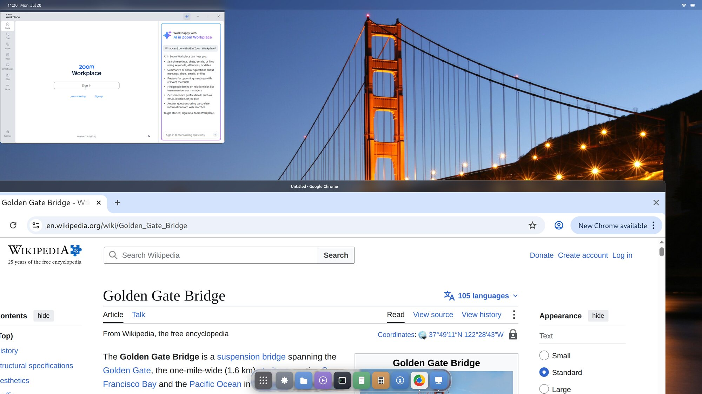

Why build a whole desktop on a GUI framework?
A desktop environment and a modern GUI framework already do almost the same work. Building the desktop on the framework isn't a stunt — it's why tiling, spaces, Mission Control and the glass all work on real applications for free. Here's the case for the approach, and for the two choices underneath it: Flutter, and Swift.
How does a desktop actually work?
I've always been drawn to that question. Not the wallpaper and the icons — the machinery underneath. What is actually happening when you drag a window and it glides, when two programs written by strangers years apart end up sharing one screen without tearing, when you plug in a monitor and the world rearranges itself to fit? A desktop is one of the most familiar objects in computing and one of the least examined.
The moment you look closely, the folklore kicks in: building a desktop from scratch is an enormous amount of work. And it's true. A conventional Linux desktop is a dozen separate programs — compositor, window manager, panel, toolkit, theme engine, settings daemon, portal — each with its own model of the world, all passing messages and hoping they agree. Years of effort, spread across many projects, just to make the parts get along.
But every time I traced the work those programs do, I kept noticing the same thing. I'd seen most of it before — in a place that felt much smaller and much more solved.
A framework already does most of it
Think about what a mature GUI framework — Flutter, or something like it — does every frame. It maintains a scene of everything on screen. It runs layout to decide where each element goes. It takes raw pointer and keyboard input and routes it to the right target. It composites the whole scene on the GPU, animates it at the display's refresh rate, renders text, clips, blends, and manages a tree of live objects that update as state changes.
Now list what a desktop environment does: maintain a scene of everything on screen, lay out where each window goes, route input to the right window, composite the result on the GPU, animate it smoothly, draw panels and text and shadows. It is nearly the same list. A window is just a very large widget whose pixels happen to come from another process. A dock is a widget. A menu bar is a widget. Mission Control is an animated layout of thumbnails.
So the thought that wouldn't leave me alone was simple: if a framework has already solved drawing, layout, input, compositing, animation and a whole widget set — decades of hard, refined work — why start a desktop from an empty file? Why not start from the framework and only build the part that's genuinely missing?
What building on a framework buys
The obvious answer is the work you skip. Start a desktop from an empty file and you write a scene graph, a layout engine, input hit-testing, a text stack, an animation system and a widget set before you have drawn a single window. All of that already exists, refined over years, inside any mature GUI framework. Starting there isn't a shortcut so much as declining to rewrite a solved problem.
- A live scene graph of everything on screen
- Layout, constraints and reflow
- GPU compositing and refresh-rate animation
- Text, clipping, blending, a full widget set
- Input hit-testing and event routing
- Own the display — talk to DRM/KMS and the GPU
- Read real input devices and route them
- Be a Wayland (and X11) server for other apps
- Composite foreign apps' buffers into the scene
- Windows, monitors, hot-plug, spaces, portals
But the saved effort is the smaller half of the argument. The real payoff arrives the moment an app's surface becomes a widget — a node in the same tree as the dock and the menu bar. From then on, everything the framework already knows how to do to a widget, it can do to a running copy of Chrome.
Tiling is a layout
Master-and-stack isn't a window-manager feature here. It's a layout widget, the same kind that arranges a list — with applications as its children instead of buttons.
Mission Control is an animated grid
Scale every window down, arrange the thumbnails, animate between the two states. A framework has done that since its first release; the only new part is what the thumbnails contain.
Spaces are a page view
Sliding between virtual desktops is a horizontal page controller. Drag a window along as you switch and you are reparenting a widget mid-flight, which the framework also already handles.
Glass is a shader on a widget
The dock refracts what passes behind it because a fragment shader runs over its subtree. It works over Chrome for exactly the reason it works over a button: neither is a special case.
The same logic runs through the boring parts. One theme reaches every app because there is no toolkit boundary for it to stop at. A settings panel and a window decoration are written the same way, by the same person, in the same language. And the shell is ordinary application code — anyone who can write an app for this framework can change the desktop itself.
Why Flutter
Plenty of frameworks do layout and GPU compositing. Very few will let you take the floor out from under them.
-
It has a seam where the platform should be
The engine exposes a documented C API — the embedder API — in which the host supplies the rendering surface, the input events and the vsync signal. Most frameworks assume a window system exists and refuse to start without one. Flutter assumes nothing and asks you to provide it, which is exactly the shape of the problem: we hand it DRM/KMS where a window would normally go.
This isn't a hack discovered by accident. flutter-pi drives KMS/DRM through the same seam, and Sony ships an embedded-Linux embedder built on it. The API is working as designed; the unusual part is what we pointed it at.
embedder.h · host supplies surface, input, vsync -
It draws every pixel itself
Flutter renders its own widgets rather than wrapping native ones. For an app that's a trade-off — you don't inherit the platform's look. For a desktop it's the requirement: the thing that owns the screen has to draw everything on it, and a framework that already refuses to delegate has nothing to unlearn.
no native widgets · nothing to emulate -
The expensive machinery is already GPU-resident
A retained scene graph, GPU compositing, clipping, blending and animation driven at the display's refresh rate are not features we added for the desktop. They are what the engine does every frame for the smallest app, and they are precisely what a compositor needs.
retained scene · refresh-rate animation
Why Swift
Flutter's engine is C++, but the framework layer above it — widgets, layout, render objects — is Dart, and Dart brings a virtual machine and a garbage collector. For an application that is a perfectly reasonable trade. For a session it is the wrong foundation.
A compositor that misses a frame doesn't drop it in one app. It drops it for everything on screen at once. A collector pause is a visible stutter on every window you happen to be dragging. So the framework layer was rewritten — and the language it was rewritten in had to earn its place.
Compiled, not interpreted
Swift compiles ahead of time to machine code. There is no interpreter and no JIT between the widget tree and the CPU, and nothing that has to warm up before your desktop feels fast.
Counted, not collected
ARC settles retain and release at compile time. It isn't a tracing collector: nothing scans the heap while you drag a window, so there is no pause to land badly in the middle of an animation.
Expressive enough to carry the model
Flutter's widget, element and render-object design survives the move largely intact — protocols and generics express it without contortions. That matters when the port runs to a quarter of a million lines.
It speaks C and C++ natively
The Swift compiler embeds Clang, so engine headers import straight through a module map — the C embedder API and the C++ classes beneath it alike. No FFI layer, no generated bindings, no shim in between.
That last one is the difference between a port and a wrapper. In stock
Flutter the engine's C++ classes reach the framework through
dart:ui, bound to the Dart VM; here Swift takes that seat
directly. Without it the alternative is a hand-written C shim around every
engine class — thousands of lines of glue, and a marshalling layer on the
path every frame takes.
A framework is a client. A desktop is a server.
None of the above is free, because a GUI framework is built to be a client of the desktop. It expects to be handed a window to draw in, to be fed input events, to submit its finished frames to something else that owns the screen. It assumes there is already a compositor above it, a display server, a session — a world it plugs into.
A desktop is the opposite. It is the server. It owns the display and drives the GPU directly. It hands out the windows. It reads the raw input devices and decides who gets each event. It composites everyone else's pixels — programs it didn't write, in toolkits it doesn't control — into one scene. Building a desktop on a framework means taking the thing designed for the top of the stack and placing it at the very bottom.
That inversion is the work, and others have done parts of it. GNOME's Shell builds a bespoke scene toolkit, Clutter, for the shell itself. Qt ships a Wayland compositor module whose own example is titled write a compositor in pure QML. Sailfish OS has shipped Lipstick, a QML compositor, for a decade. Google writes Fuchsia's system UI in Flutter. And Enlightenment has been a Wayland compositor built on EFL — a general-purpose toolkit Samsung ships on Tizen — since 2015.
They stop in different places. The Qt shells keep a QML runtime and a JavaScript engine under the session. Fuchsia's Flutter shell hands its interface to Scenic, a separate compositor that owns the screen. Lipstick is a phone homescreen. Enlightenment goes all the way down — though EFL grew outward from the window manager that needed it, rather than being adopted from outside. What follows is what the inversion took here.
Building the half that was missing
So that became the whole project: keep the client half the framework already gives you, and build the server half by hand — welding the two into a single program that is, at once, a GUI application and the desktop that hosts every other one. It went in these moves.
-
Put the framework at the bottom of the stack
We took the Flutter engine's C core — its renderer, its scene compositor — and ran it not inside a session but as the session, drawing straight to the display through DRM/KMS with nothing beneath it. No desktop to plug into; it is the desktop.
Flutter engine C core · straight to DRM/KMS -
Re-host the framework in a compiled language
You don't want a garbage-collected virtual machine as the foundation of an entire session. So the framework layer itself — Flutter's widget, rendering and layout model — was rewritten in Swift, compiled ahead of time to machine code, with no Dart VM in the loop. It binds only the engine's stable C API, so the whole desktop animates like a native app because it is one.
A full Flutter→Swift port · no interpreter, no VM -
Speak the protocols other apps expect
Here's the part it's easy to mislabel. The compositor is the framework — the one thing that owns the screen and draws every pixel. What gets built beside it isn't a second compositor; it's a protocol server. A few thousand lines of hand-written C speak the Wayland wire protocol so existing Wayland apps can connect, and an X11 server does the same for X11 apps. They're translators, not compositors: each takes a client's surface and hands it to the framework.
Raw input from the devices is translated the same way — into the framework's own event model, the events a widget already understands, now sourced from real hardware.
Wayland protocol server · X11 server · translators, not compositors -
Every app becomes a widget
This is the move the whole design turns on. A framework renders its own content; a desktop must show content it never drew. So the framework takes the surface a protocol server hands it and wraps it as a widget — a node in the very same tree as the dock and the menu bar, shared straight off the GPU, never copied. From its side there is no category called "window": a running copy of Chrome is just a widget it lays out, clips, animates and composites like any other.
That is why spaces, tiling, Mission Control and the glass all work on real apps for free — the framework already knew how to move widgets around, and an app is now one of them. Each still runs as its own process, so one crashing takes only its own widget with it.
an app's surface = a widget · dmabuf zero-copy · isolated per-process -
Make it a real desktop, not a demo
Everything a person expects had to exist and be part of the same program: window management, multi-monitor with hot-plug, virtual spaces and an overview, portals so apps can pick files and record the screen, and a set of first-party apps — Files, Terminal, Settings, Calculator, Text Editor, Image Viewer and more — each written in the same framework as the shell that hosts them.
Spaces · multi-monitor · portals · first-party apps
And there are exactly three ways an app can get into that one tree — three front doors, all leading to the same compositor:

A desktop you can log into
It works. Not a prototype in a window — a real desktop on real hardware, that you choose at the login screen and sign in to, running third-party apps on Wayland and X11 alike. The idea held up: most of a desktop really was already sitting inside a framework, waiting for someone to stand it on its head and build the missing half. This page is that half's story.